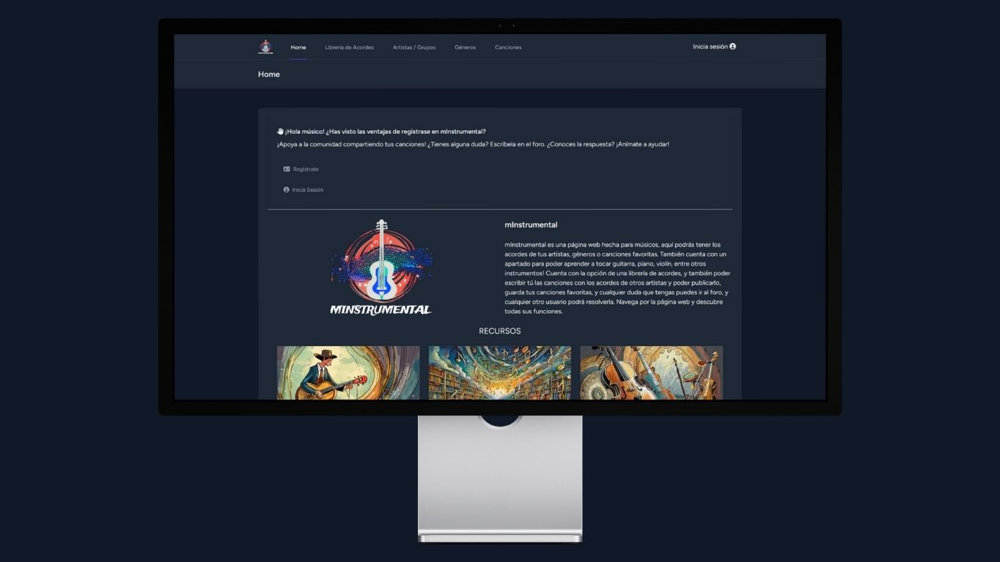
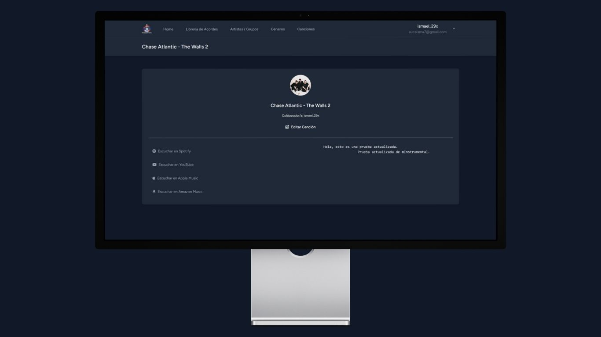

Manual d'usuari - Ismael Iván
En aquesta part del manual d’usuari, mostraré el funcionament de la pàgina mInstrumental general, per diferents rols: Usuari sense cap sessió, usuari amb sessió iniciada i l'usuari administrador.
Índex del Manual
Usuari sense cap sessió
- Si ets un usuari sense sessió, quan accedeixes a la pàgina web podràs veure la pàgina d’inici, en aquesta part podràs accedir també als “recursos” com qualsevol usuari.
- Si fas clic en iniciar sessió, demanarà un correu electrònic i la contrasenya, en cas de no tindre cap sessió creada, pots registrar-te.
- Aquí pots veure tots els artistes que hi ha disponibles a la pàgina web.
- Si accedeixes a un artista podràs veure totes les cançons que té actualment dins de la plataforma associada a l’artista.
- En generes funciona exactament de la mateixa forma.
- En aquest cas si fas clic en un gènere, s'obrirà un llistat de totes les cançons associat al gènere.
- En l’apartat de cançons, sortirà totes les cançons que hi ha en aquest moment.
- Si fem clic podem veure la cançó.


Usuari amb sessió iniciada
Funciona de la mateixa forma que un usuari sense sessió, però té uns canvis.
- Per començar, podem veure que apareix el nom d’usuari.
- Si fem clic, s’obrirà un desplegable.
- Hi haurà tres opcions, tancar sessió, ver les meves cançons, i editar el meu perfil, si accedim al meu perfil podem veure que podem editar-ho.
- La principal diferència, és poder afegir cançons, a comparació d’un usuari sense cap sessió, apareix un botó.
- Si fem clic dins, s’obrirà una nova pàgina, per poder escriure i publicar la cançó.
- En el cas dels desplegables, he utilitzat una llibreria de JavaScript Select2, aquesta llibreria ajuda a poder cercar dins d’una llista, s’ha fet això més que res, perquè en un entorn de prova pot passar, però si en qualsevol cas això estigues en producció hi hagués cent cançons, baixar el llistat per seleccionar l’artista o gènere pot ser fastigós.
- Si fem clic en “Publicar cançó”, podem veure que s’afegeix la cançó en el mural.
- Podem veure en el cas de gèneres, com augmenta el Nº de Cançons.
- Mateix passa amb els artistes.
- En accedir a una cançó, podem veure que surt la cançó, però també un nou botó que es diu “Editar cançó”. Aquesta part només apareix en cas que l’usuari sigui el creador de la cançó, també podem veure que conté els espais que hi ha, això per l’etiqueta <pre>.
- Si faig clic en editar cançó, s'obrirà una finestra de la mateixa forma que per publicar una cançó, però amb les dades ja posades.
- Ara podem editar la cançó, i actualitzar els canvis.
- Aquí podem veure els canvis aplicats.
¿En cas que hi hagi molts espais? Amb un “overflow-x: auto;” podem veure que la pàgina no perd l’estètica.

Usuari administrador
Funciona de la mateixa forma que un usuari amb sessió, però té els seus canvis. (En aquest cas d'administració).
- Per començar, la interfície principal és igual, però té de diferència que hi ha camps nous, per exemple tenim aquest interruptor que serveix per fer un canvi de vista per l’administrador. Pot tindre la vista d’usuari, com la seva vista d’administrador.
- Com podem veure, al moment d’activar-ho s’obrirà la finestra de Dashboard, i podem començar amb l’administració de la pàgina web.
- Aquí podem veure que podem administrar els usuaris, veure la informació principal, i poder veure que hi ha l’opció d’esborrar un usuari o editar-ho.
- Ara de la mateixa forma, podem veure que en artistes també es pot modificar.
- De la mateixa forma en gèneres.
- En cançons, també podem veure el control que hi ha.
- Si fem clic en l’ull, s'obrirà la cançó, com podem veure també apareix el botó d'Editar cançó, tal com es va esmentar abans, el botó només apareix en cas que l’usuari sigui administrador, o sigui el creador de la cançó, en cas que l’administrador faci una edició d’una cançó d’altre usuari, es manté el nom del col·laborador original.
- Si l’administrador fa clic en l’edició de la cançó, podem posar els enllaços de les cançons en les diverses plataformes que ofereix.